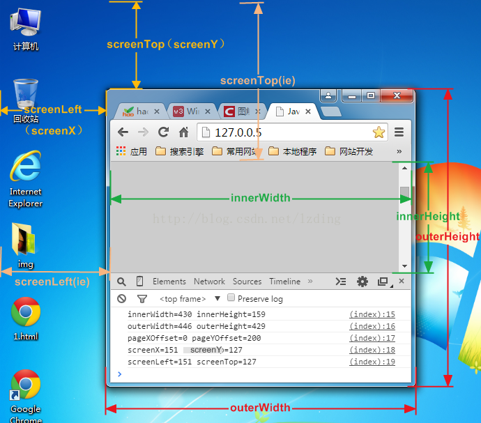

| 屬性 | 描述 |
|---|---|
| document | |
| history | |
| screen | |
| navigator | |
| location |
| 屬性(HTML 5) | 描述 |
|---|---|
| localStorage |
Web 資料儲存
方法：
屬性：
|
| sessionStorage | Web 資料儲存；同 localStorage，但網頁關閉後，資料即消失 |
| indexedDB | NoSQL 資料庫 |
| openDatabase | SQLite 資料庫 |
| 屬性 | 描述 |
|---|---|
| frames | 取得 window 內的 iframe 的陣列集合 |
| self | 目前的瀏覽視窗 |
| parent | 若是 iframe，則指父視窗，反之會等同於 self |
| top | 最上層的瀏覽視窗；如沒有，則等同於 self |
| innerWidth |  |
| innerHeight | |
| outerWidth | |
| outerHeight | |
| screenY screenTop |
|
| screenX screenLeft |
|
| scrollX pageXOffset |
以 px 為單位，返回水平軸上 document 已經被捲去的寬度 |
| scrollY pageYOffset |
以 px 為單位，返回垂直軸上 document 已經被捲去的高度 |
| 方法 | 描述 |
|---|---|
| alert(msg) | 訊息對話盒 |
| confirm(msg) | 訊息對話盒；傳回 true / false |
| prompt(msg, defaultValue) | 提示對話盒；傳回對話盒中的輸入值 |
| print() | 列印網頁的內容 |
| setInterval(callback, n) | 週期計時器，延遲 n 毫秒執行；傳回 id |
| clearInterval(id) | 結束週期計時器 |
| setTimeout(callback, n) | 一次計時器，延遲 n 毫秒執行；傳回 id |
| clearTimeout(id) | 結束一次計時器 |
| requestAnimationFrame(callback) | 取代 setTimeout 及 setInterval；傳回 id |
| cancelAnimationFrame(id) | 結束 requestAnimationFrame |
| fetch() | 遠端資料請求 |
| postMessage() | 不同 window 間傳送訊息；以 onmessage 接收訊息 |
| 事件 | 描述 |
|---|---|
| onload | 視窗下載網頁完成時 |
| onunload | 結束視窗時 |
| onmessage | 收到別的視窗呼叫 postMessage 時 |
| onfocus | 視窗獲得焦點時 |
| onblur | 視窗失去焦點時 |
| ononline | 網頁連線時 |
| onoffline | 失去網頁連線時 |
| onresize | 改變視窗大小時 |
| onstorage | localStorage 或 sessionStorage 資料異動時 |